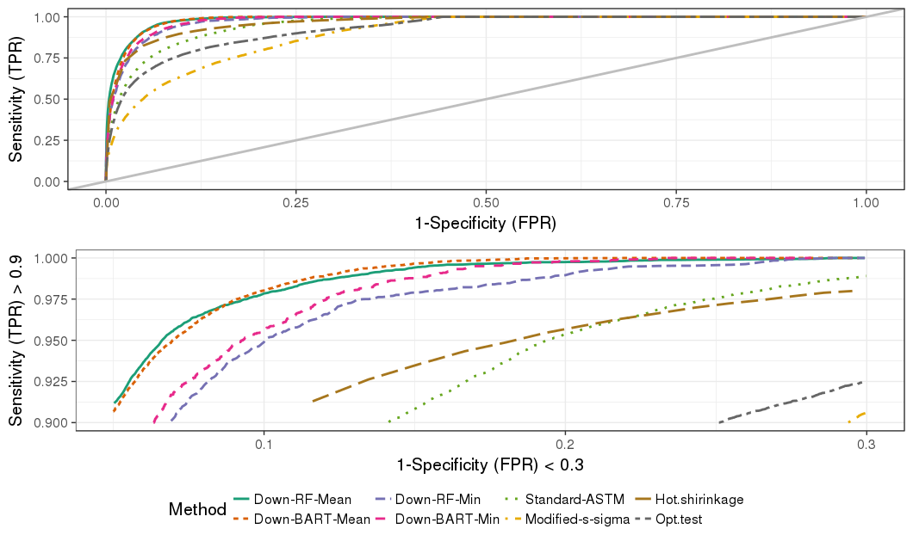

Chapter 5 Glass
5.1 Data collection
- Since 2016, it has started to collect the float glass panes from two glass industries in the U.S.
- Glass panes were consecutively manufactured.

- We could construct the challenging comparisons.

- The elemental chemical concentrations were measured by LA-ICP-MS by the help from Univ. of Iowa.
- Each pane was broken to several fragments. Then we pick 24 fragments randomly.
- Each fragment was measured 5 times for 21 fragments and measured 20 times for 3 fragments.
- Using the data, we construct mates and non-mates.

5.2 The ASTM standard method
- ASTM-E2330-12 (2012) and ASTM-E2927-16 (2016) detail the steps recommended to carry out forensic glass comparisons.
- At a minimum, the standard approach calls for three fragments from the source at the crime scene (\(n_{K} \geq 3\)), each measured at least three times (\(M_K \geq 3\)), and one fragment, also measured three times, recovered from the suspect (\(n_Q = 1, M_Q \geq 3\)). Using those measurements:
- Calculate the mean concentration for each element \(i = 1, \dots, p\) from the known fragments, denoted \(\bar{y}_{Ki\cdot\cdot}\). Also record 3% of the mean, \(0.03\cdot \bar{y}_{Ki\cdot\cdot}\).
- Calculate the standard deviation of each elemental concentration from the known fragments. Denote this value by \(\sigma_{Ki}\).
- Compute an interval for each \(i\): \(\bar{y}_{Ki\cdot\cdot}\) \(\pm\) 4 \(\times\) \(\max(\sigma_{Ki}, 0.03\cdot \bar{y}_{Ki\cdot\cdot})\). This is also known as the \(4\sigma\) interval in the literature (cf.~Weis et al. (2011)).
- Calculate the mean concentration of each element \(i = 1, \dots, p\) in the questioned fragment(s), denoted \(\bar{y}_{Qi\cdot\cdot}\).
- Compare the value \(\bar{y}_{Qi\cdot\cdot}\) to the \(4\sigma\) interval from Step 3: if \(\bar{y}_{Qi\cdot\cdot} \notin (\bar{y}_{Ki\cdot\cdot} \pm 4 \times \max(\sigma_{Ki}, 0.03\cdot \bar{y}_{Ki\cdot\cdot}))\) for one or more values of \(i\), the glass sources for two groups \(G_K\) and \(G_Q\) are distinguishable. Otherwise, they are indistinguishable. This means that if any single element mean value from the questioned source does not fall in the \(4\sigma\) interval, the glass sources are declared distinguishable, otherwise they are declared indistinguishable.
5.3 Learning algorithms to evaluate forensic glass evidence
by Soyoung Park & Alicia Carriquiry,
published in The Annals of Applied Statistics in 2019.06.
- Take the pariwise differences of 18 element values between two fragments which assigned to classes of mates and non-mates.

Developed the scoring metric using several machine learning algorithm and the existing methods, including the ASTM standard.
We proposed expressing the criterion suggested by the ASTM standard as a , representing the degree of similarity between \(G_K\) and \(G_Q\). Mathematically, this score is computed as:
\[\begin{eqnarray} S_{ASTM,i}&=&\left|\frac{\bar{y}_{Ki\cdot\cdot}-\bar{y}_{Qi\cdot\cdot}}{\max(\sigma_{Ki}, 0.03\cdot \bar{y}_{Ki\cdot\cdot} )}\right| \label{eq:scorestad1} \\ S_{ASTM}&=&\max(S_{ASTM,i}) \label{eq:scorestad2} \end{eqnarray}\]
where \(i \in \{1, 2, \dots 18\}\) indexes element. The maximum (\(S_{ASTM}\)) across all element-wise scores (\(S_{ASTM,i}\)) becomes the final score to determine if fragments from the pane \(K\) and the pane \(Q\) have a common source. If \(S_{ASTM} > 4\), then the two groups of fragments, \(G_K\) and \(G_Q\) from panes \(K\) and \(Q\) are declared to be distinguishable.
- Test the source prediction performance among the RF, BART, ASTM, hotelling T^2 shrinkage and more..

- Density plots by the RF and the ASTM
5.4 Evaluation and comparison of methods for forensic glass source conclusions
by Soyoung Park & Sam Tyner,
accepted for publication in Forensic Science International in 2019.
Understanding the ASTM method
- Comparison of the RF method and the ASTM method on source conclusion.
- Depart the ASTM criteria into five pieces:
\[\begin{eqnarray} S_{ASTM,i}&=&\left|\frac{\bar{y}_{Ki\cdot\cdot}-\bar{y}_{Qi\cdot\cdot}}{\max(\sigma_{Ki}, 0.03\cdot \bar{y}_{Ki\cdot\cdot} )}\right| \\ S_{ASTM}&=&\max(S_{ASTM,i}) \end{eqnarray}\]
- The absolute difference in mean of two fragments

- Standard Deviation or 3% Known Mean?
- Deciding Element
- Decision Threshold

| Method | AUC-ROC | EER | OT | FPR(OT) | FNR(OT) |
|---|---|---|---|---|---|
| RF | 0.965 | 0.098 | 0.522 | 0.142 | 0.045 |
| ASTM | 0.936 | 0.137 | 2.870 | 0.140 | 0.133 |
- Number of Known Fragments
- Stressing test